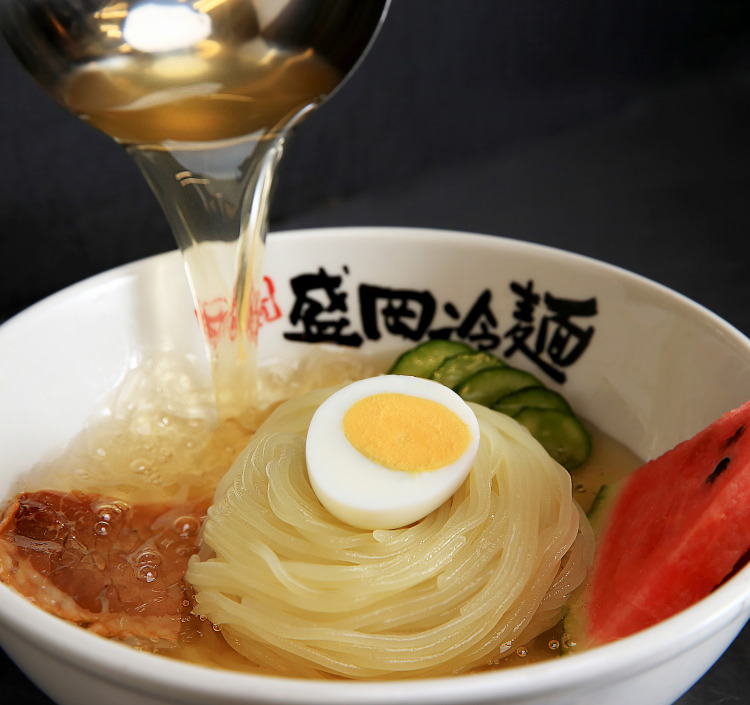
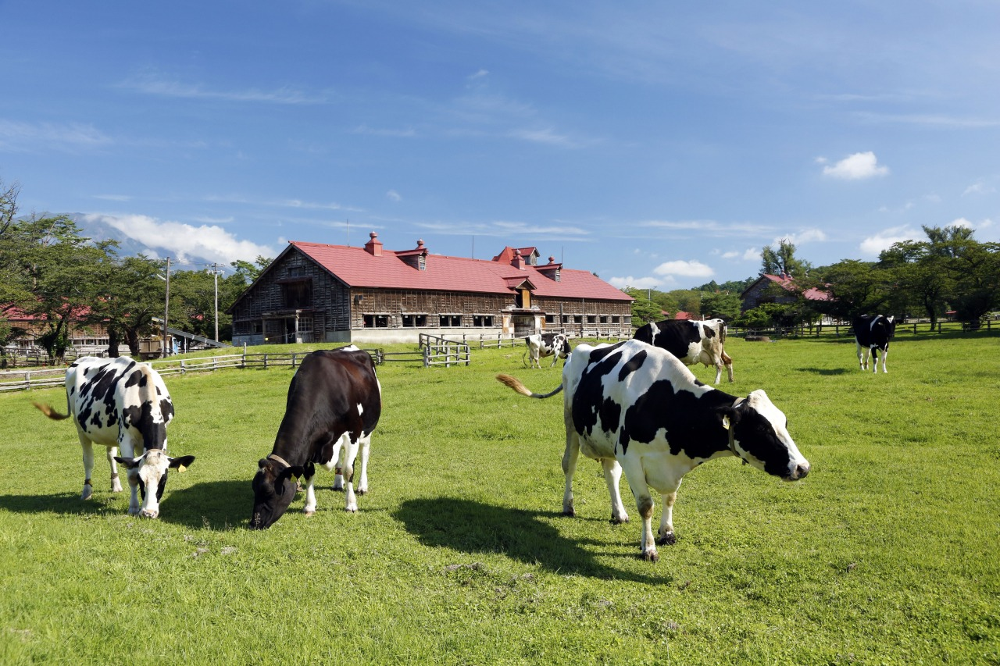
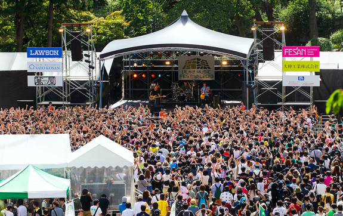

岩手の名物麵料理と言えばわんこそば、冷麵、じゃじゃ麵の三大麵！
どれも歴史のある伝統料理です
リアス海岸で取れた新鮮な海産物や、県内外問わず愛されている
福田パンなど岩手で育まれた味がここにあります！
岩手の雄大な自然を活かしたレジャー施設で
夏も冬も楽しみましょう！
歴史ある岩手公園で開催される音楽フェスやギネス記録に
認定されたさんさ踊りなど盛り上がれるイベントがたくさんあります！
このホームページを作った人の紹介です！